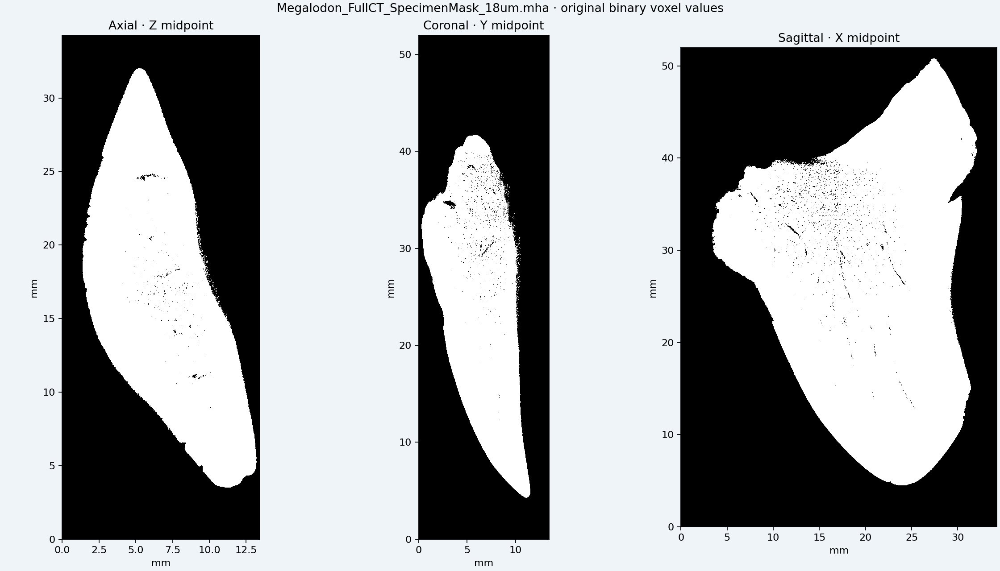
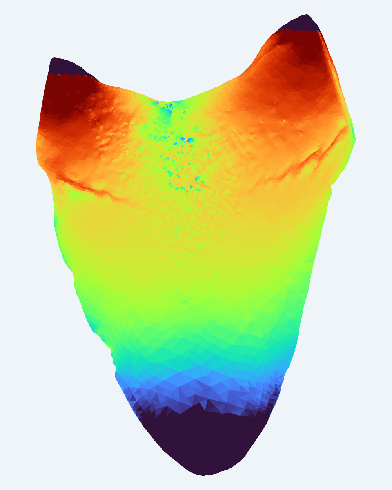
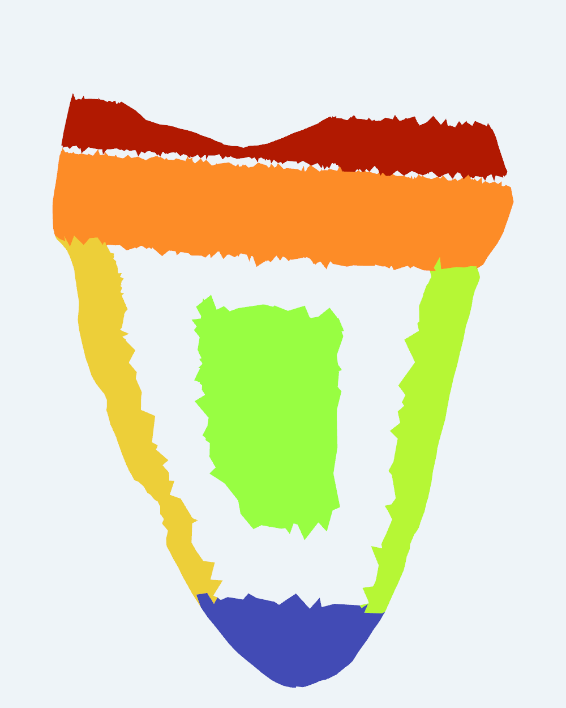

Nine-page paper / Recalibrated 18 µm pressure experiment
Von Mises & regional Q_F.
The checked L2 solution and physical region masks drive both views. Q_F is the volume-weighted inverse empirical distribution used in the current nine-page paper’s Table 9. Full projects these saved results onto every triangle of the 31,999,434-face CT reconstruction.
Von Mises field
New 1 MPa crown-face pressure case · element stresses in MPa
Loading saved calculation…
Table 9 · Q_F,0.95
Fixed physical regions · volume-weighted stress quantiles in MPa
Loading frozen regional masks…
Full retains every one of the 31,999,434 CT faces. The solved-mesh option shows the actual L2 finite-element boundary or sampled element centroids. Projection uses the current 18 µm physical frame, without the earlier Z correction factor. Q_F is one constant volume-weighted value per physical region. CT colors inherit the nearest saved element’s region label; gray denotes an unassigned label. These displays do not rerun the FE solve. The von Mises color display uses 2nd–99th percentile limits; saved stress values and regional statistics are unchanged.
| Region | Elements | Q_F,0.90 MPa | Q_F,0.95 MPa | Q_F,0.99 MPa | SAF0.95 |
|---|---|---|---|---|---|
| R0 · Central crown interior | 31,130 | 9.057 | 10.555 | 13.084 | 10.555 |
| RA · Cutting-edge side A | 25,905 | 24.407 | 29.587 | 48.052 | 29.587 |
| RB · Cutting-edge side B | 16,324 | 12.227 | 14.572 | 18.507 | 14.572 |
| Rtip · Macroscopic apical tip | 13,065 | 0.446 | 0.533 | 0.716 | 0.533 |
| Rcr · Geometric transition band | 397,306 | 44.705 | 62.811 | 112.680 | 62.811 |
| Rroot · Root-side interior band | 71,316 | 188.245 | 261.966 | 389.605 | 261.966 |
All 18 primary Table 9 values were independently reproduced from the 963,710 saved L2 elements with their physical volumes and frozen masks. Equal-element type-7 summaries from the earlier experiment remain in the previous-edition archive and are not used here.
Mouse or one-/two-finger drag: rotate. Pinch: zoom. Two-finger trackpad scroll: rotate; trackpad pinch: zoom. Keyboard: arrows rotate, + / − zoom, Home resets. Canvas size and projection update on resize and device rotation; all source faces remain present after full loading.
Full CT · natural fossil colors.
Every detailed 32M view retains all faces of its named 32M source; downloads remain unchanged. Natural fossil colors are embedded in the original colored 3MF and registered onto the 18 µm reconstructions. Expand a model by name.
Original natural-colored full CT32,687,264 source faces · 347 MB source · expand interactive 3D
Detailed loads all 32,687,264 original colored-source faces without removing faces. Light uses 419,999 faces.
Open to load full 3D geometry…
One- or two-finger drag to rotate · pinch to zoom · mouse drag or trackpad · arrow keys and + / −
32M reconstruction31,999,434 source faces · 528 MB source · expand interactive 3D
Detailed loads all 31,999,434 faces of this 18 µm CT reconstruction. Light uses 420,000 faces.
Open to load full 3D geometry…
One- or two-finger drag to rotate · pinch to zoom · mouse drag or trackpad · arrow keys and + / −
Unreduced native source · 74M download74,293,846 source faces · 753 MB source · expand interactive 3D
Light shows a 420,000-face 3D display of the native source. Detailed shows the complete 31,999,434-face reconstruction of the same CT. The unchanged unreduced native source is downloadable below.
Open to load full 3D geometry…
One- or two-finger drag to rotate · pinch to zoom · mouse drag or trackpad · arrow keys and + / −
Lossless 18 µm specimen mask31 MB · original binary voxel data

Download unchanged MHA ↓The native 74M file and the optimized 32M reconstruction are distinct meshes. The native panel names which display geometry is loaded. Color-reference projections do not measure internal tissue colors.
Paper & versions.
Current Otodus megalodon paper · 9 pages
The nine-page PDF contains direct downloads for the unchanged 31,999,434-face 32M model and the 74,293,846-face unreduced native model.
Earlier versions: 20-page revised report · 26-page pressure-case revision · Original 26-page technical report
Current pressure experiment · static views.



